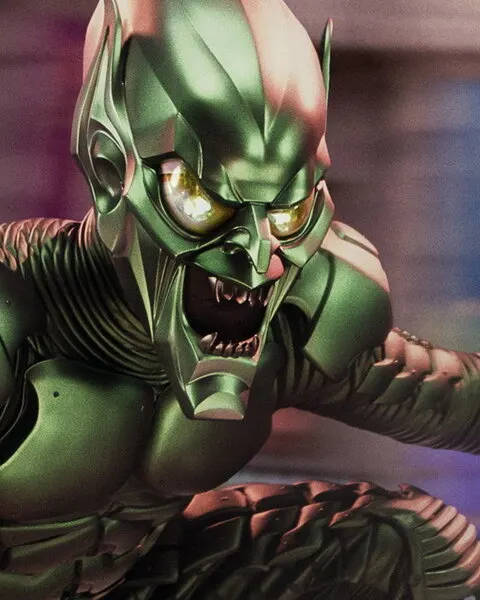

Duende Verde
Villano · Norman Osborn, interpretado por Willem Dafoe
- 2002
Origen: el dueño de Oscorp prueba en sí mismo un suero de mejora física para no perder un contrato militar. El experimento le da fuerza sobrehumana y despierta una segunda personalidad sin límites.
Qué representa: el poder sin responsabilidad. Le ofrece a Peter una alianza y le muestra el camino opuesto al que le enseñó el tío Ben.